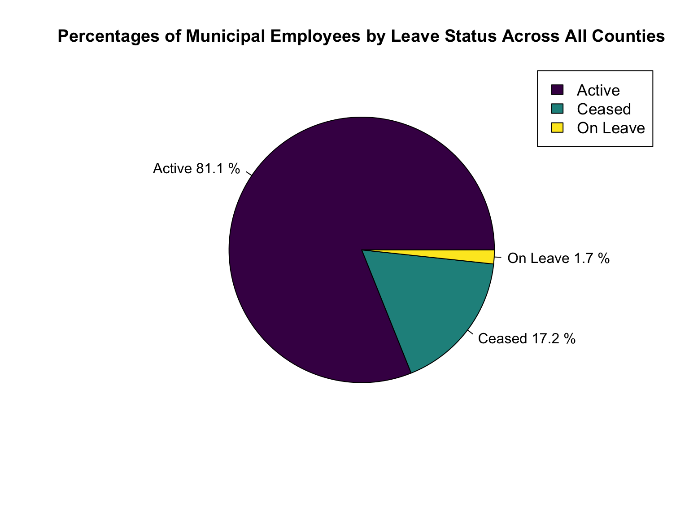

Job Titles and Leave Status

library(tidyverse)
library(janitor)
library(viridis)
library(plotly)
library(ggplot2)
knitr::opts_chunk$set(
echo = TRUE,
warning = FALSE,
fig.width = 8,
fig.height = 6,
out.width = "90%"
)
options(
ggplot2.continuous.colour = "viridis",
ggplot2.continuous.fill = "viridis"
)
scale_colour_discrete = scale_colour_viridis_d
scale_fill_discrete = scale_fill_viridis_d
theme_set(theme_minimal() + theme(legend.position = "bottom"))payroll_data =
read_csv("data/payroll_data.csv")Job Titles
mean_base_salary_plot =
payroll_data %>%
group_by(county_name, job_title) %>%
summarise(count = n()) %>%
ungroup() %>%
group_by(county_name) %>%
summarise(count = n()) %>%
plot_ly(x = ~ reorder(county_name, count), y = ~ count, color = ~county_name, type = "bar", colors = "viridis")
mean_base_salary_plot |> layout(
yaxis = list(title = "Number of Job Titles"),title = "The Number of Job Titles Held By Municipal Employees in New York State By County",
xaxis = list(title = "County Names"))job_frequency =
payroll_data %>%
group_by(county_name, job_title) %>%
summarise(job_frequency = n()) %>%
arrange(desc(job_frequency)) %>%
ungroup()
job_frequency_data =
job_frequency %>%
top_n(job_frequency, n = 10) %>%
mutate(
job_title = recode(job_title, "TEACHER- PER SESSION" = "TEACHER PER SESSION"),
job_title = recode(job_title, "ANNUAL ED PARA" = "EDUCATION PARAPROFESSIONAL"),
job_title = recode(job_title, "TEACHER SPECIAL EDUCATION" = "SPECIAL EDUCATION TEACHER"),
job_title = recode(job_title, "TEACHER-GENERAL ED" = "GENERAL EDUCATION TEACHER"),
job_title = recode(job_title, "SUBSTITUTE ED PARA" = "SUBSTITUTE EDUCATION PARAPROFESSIONAL"),
job_title = recode(job_title, "F/T SCHOOL AIDE" = "SCHOOL AIDE"))
job_frequency_plot =
job_frequency_data %>%
plot_ly(x = ~ reorder(job_title, job_frequency), y = ~ job_frequency, color = ~county_name, type = "bar", colors = "viridis")
job_frequency_plot |> layout(
yaxis = list(title = "Number of Employees"),title = "Top 10 Job Titles Throughout the Counties in New York State",
xaxis = list(title = "Job Titles"))top5_freq =
payroll_data %>%
filter(county_name %in% c("NEW YORK", "KINGS", "BRONX", "QUEENS", "RICHMOND","ALBANY")) %>%
group_by(county_name, job_title) %>%
summarise(number_of_people = n()) %>%
arrange(desc(number_of_people)) %>%
slice(1:5)
top5_freq_n =
top5_freq %>%
mutate(
job_title = as.factor(job_title),
job_title = recode(job_title, "TEACHER- PER SESSION" = "TEACHER PER SESSION"),
job_title = recode(job_title, "ANNUAL ED PARA" = "EDUCATION PARAPROFESSIONAL"),
job_title = recode(job_title, "TEACHER SPECIAL EDUCATION" = "SPECIAL EDUCATION TEACHER"),
job_title = recode(job_title, "ASST DIR OF INTERGVNMENTAL RELTNS FOR THE ALBANY OFFICE" = "ASSISTANT DIRECTOR OF INTERNATIONAL RELATIONS"),
job_title = recode(job_title, "EMERGENCY MEDICAL SPECIALIST-EMT" = "EMT"))
top_plot =
ggplot(top5_freq_n, aes(x = reorder(job_title, number_of_people), y = number_of_people)) + geom_point(aes(color = county_name), alpha = 0.5) +
scale_y_continuous(
labels = scales::comma,
limits = c(0,120000),
breaks = seq(0, 120000, by = 15000)) +
labs(title = "Top Five Job Titles in Six New York State Counties",x = "Job Title", y = "Number of Employees") +
guides(color = guide_legend(title = "New York State County Names")) +
theme(axis.text.x = element_text(angle = 90, vjust = 0.5, hjust = 1))
top_plotjob_frequency_newyork =
payroll_data %>%
filter(county_name == "NEW YORK") |>
group_by(county_name, job_title) %>%
summarise(job_frequency = n()) %>%
arrange(desc(job_frequency)) %>%
ungroup()
job_frequency_newyork_data =
job_frequency_newyork %>%
top_n(job_frequency, n = 10) %>%
mutate(
job_title = recode(job_title, "TEACHER- PER SESSION" = "TEACHER PER SESSION"),
job_title = recode(job_title, "ANNUAL ED PARA" = "EDUCATION PARAPROFESSIONAL"),
job_title = recode(job_title, "TEACHER SPECIAL EDUCATION" = "SPECIAL EDUCATION TEACHER"),
job_title = recode(job_title, "TEACHER-GENERAL ED" = "GENERAL EDUCATION TEACHER"),
job_title = recode(job_title, "SUBSTITUTE ED PARA" = "SUBSTITUTE EDUCATION PARAPROFESSIONAL"),
job_title = recode(job_title, "F/T SCHOOL AIDE" = "SCHOOL AIDE"))
job_frequency_newyork_plot =
job_frequency_newyork_data %>%
plot_ly(x = ~ reorder(job_title, job_frequency), y = ~ job_frequency, color = ~county_name, type = "bar", colors = "viridis")
job_frequency_newyork_plot |> layout(
yaxis = list(title = "Number of Employees"),title = "Top 10 Job Titles in New York County", xaxis = list(title = "Job Titles"))job_frequency_albany =
payroll_data %>%
filter(county_name == "ALBANY") |>
group_by(county_name, job_title) %>%
summarise(job_frequency = n()) %>%
arrange(desc(job_frequency)) %>%
ungroup()
job_frequency_albany_data =
job_frequency_albany %>%
top_n(job_frequency, n = 10) %>%
mutate(
job_title = recode(job_title, "ASST DIR OF INTERGVNMENTAL RELTNS FOR THE ALBANY OFFICE" = "ASSISTANT DIRECTOR OF INTERGOVERNMENTAL RELATIONS"))
job_frequency_albany_plot =
job_frequency_albany_data %>%
plot_ly(x = ~ reorder(job_title, job_frequency), y = ~ job_frequency, color = ~county_name, type = "bar", colors = "viridis")
job_frequency_albany_plot |> layout(
yaxis = list(title = "Number of Employees"),title = "TThe 6 Job Titles In Albany County", xaxis = list(title = "Job Titles"))Leave Status
Ls_bar =
payroll_data %>%
group_by(leave_status) %>%
summarise(
count = n()
)
Ls_bar_bar =
Ls_bar %>%
plot_ly(x = ~ leave_status, y = ~ count, color = ~leave_status, type = "bar", colors = "viridis")
Ls_bar_bar|> layout(
yaxis = list(title = "Number of Employees"),title = "The Number of Municipal Employees by Leave Status in New York State", xaxis = list(title = "Leave Status"))Total_ls = table(pull(payroll_data,leave_status))
labels = c("Active", "Ceased", "On Leave")
piepercent = round(100 * Total_ls / sum(Total_ls), 1)
par(xpd = TRUE)
pie(Total_ls, labels = paste(labels, sep = " ", piepercent, "%"),
main = "Percentages of Municipal Employees by Leave Status Across All Counties", col = viridis(length(Total_ls)))
legend("topright", c("Active", "Ceased", "On Leave"),cex = 1.1, fill = viridis(length(Total_ls)))